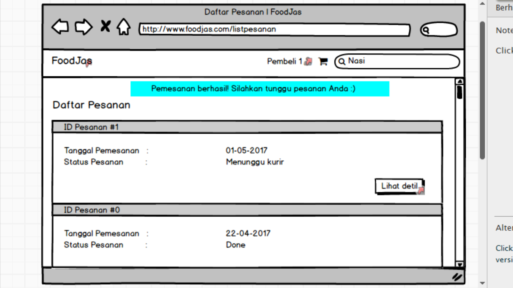

PEMBELI
Tampilan awal setelah pemesan login. Di sini semua foto warung yang ada di Pujasera Polban akan ditampilkan. Pemesan dapat mengklik foto warung untuk melihat menu-menu yang ada di warung tersebut lalu melakukan pemesanan. Pemesan juga dapat melakukan pencarian warung atau makanan/minuman dengan memasukkan kata kunci berupa nama warung atau nama makanan/minuman di search bar yang ada di pojok kanan atas.
Pemesan memasukkan keyword "Nasi" pada search bar. Daftar warung yang menyediakan menu nasi akan muncul di hasil pencarian, begitu pula dengan daftar menu yang terdiri dari nasi.
Ini adalah tampilan detil warung. Di sini contoh nama warungnya adalah Warung 1. Informasi mengenai menu-menu yang tersedia di warung 1 akan ditampilkan, seperti nama menu, deskripsi menu, serta harga menu. Untuk memasukkan menu ke dalam keranjang, pemesan dapat menekan button "masukkan ke keranjang" yang berada di pojok kanan bawah menu yang dipilih.
Pemesan menentukan jumlah pemesanan untuk menu yang telah dimasukkan ke keranjang.
Pemesan menentukan jumlah pemesanan untuk menu yang telah dimasukkan ke keranjang.
Tampilan detil warung dalam keadaan telah di-scroll down
Tampilan detil warung dalam keadaan telah di-scroll down
Tampilan menu "Keranjang". Di sini akan ditampilkan daftar pesanan pemesan. Informasi yang ditampilkan di daftar pesanan adalah nama menu yang dipesan, warung yang menyediakan menu tersebut, deskripsi menu, harga menu, serta jumlah pemesanan untuk menu tersebut.
Pemesan sedang memilih alamat pengiriman dari menu dropdown yang ada pada tampilan di atas.
Pemesan sudah memilih alamat pengiriman dari menu dropdown yang ada pada tampilan di atas.
Setelah di-scroll down, akan terlihat detil pembayaran. Pada detil pembayaran akan ditampilkan total harga pesanan, biaya pengantaran, total pembayaran (total harga pesanan ditambah biaya antar), serta pilihan metode pembayaran. Terdapat dua pilihan metode pembayaran yaitu tunai dan online payment (diberi nama FoodJas Pay). Saldo FoodJas Pay pemesan ditampilkan di samping kanan tulisan "FoodJas Pay". Pada tampilan di atas, pemesan memilih metode pembayaran tunai. Untuk mengonfirmasi pesanan, pemesan dapat menekan button "Pesan".
Tampilan error di atas akan muncul jika pembeli menekan tombol pesan tetapi belum memilih alamat pengiriman.
Tampilan di atas akan muncul jika pemesan memilih metode pembayaran FoodJas Pay lalu menekan tombol "Pesan". Pemesan akan diminta untuk mengonfirmasi penarikan uang dari saldo FoodJas Pay-nya. Jika memilih "Yes", maka pemesan telah setuju.

Jika pemesanan berhasil dilakukan, daftar pesanan pemesan akan ditampilkan. Pesan "Pemesanan berhasil! Silahkan tunggu pesanan Anda :)"" akan muncul di bagian atas. Untuk melihat detil pesanan, pemesan dapat menekan button "Lihat detil".
Tampilan detil pesanan. Informasi yang ditampilkan adalah tanggal pemesanan, status pesanan, detil serta detil pesanan. Terdapat tiga status pesanan yaitu "Menunggu kurir", "Sedang diantar", dan "Selesai". Detil pesanan berisi daftar menu yang dipesan beserta jumlah yang dipesan, total harga pesanan, biaya antar, dan tota pembayaran.
Tampilan untuk pesanan dengan status "Sedang diantar". Artinya sudah ada kurir yang mengambil dan sedang mengantar pesanan tersebut.
Tampilan untuk pesanan dengan status "Done". Artinya pesanan sudah diterima oleh pemesan dan sudah dibayar (untuk pembayaran tunai). Jika pembayaran dilakukan menggunakan FoodJas Pay, kurir akan memberikan bukti pembayaran FoodJas Pay pada pemesan.
DRIVER

Tampilan awal saat sistem menampilkan daftar pesanan yang dapat diambil kurir/driver. Kurir dapat langsung mengklik button "lihat detil" untuk melihat detil pesanan
Tampilan detil pesanan. Di sini terdapat daftar menu yang dipesan, informasi mengenai pemesan (nama pemesan, no telp), alamat pengiriman, metode pembayaran, estimasi biaya belanja, dan biaya pengantaran.
Tampilan user profile kurir/driver